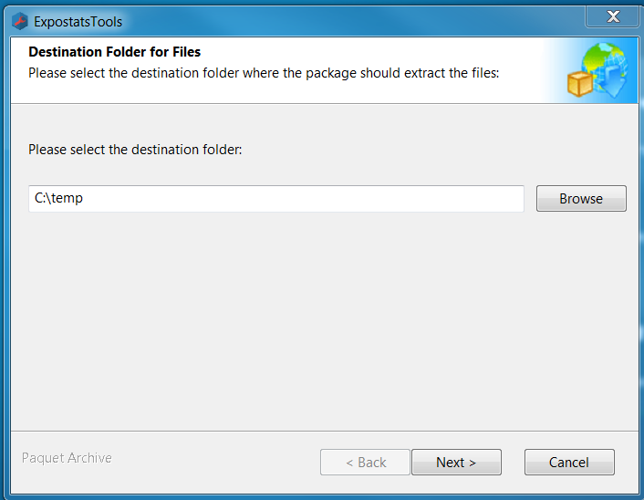
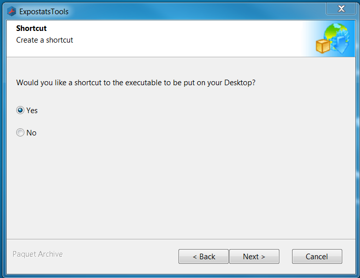
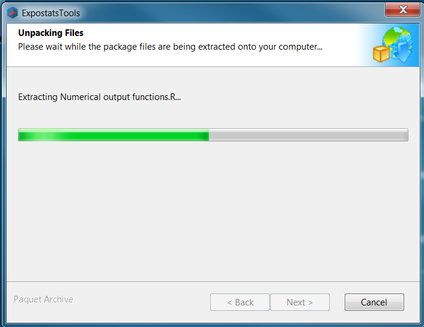
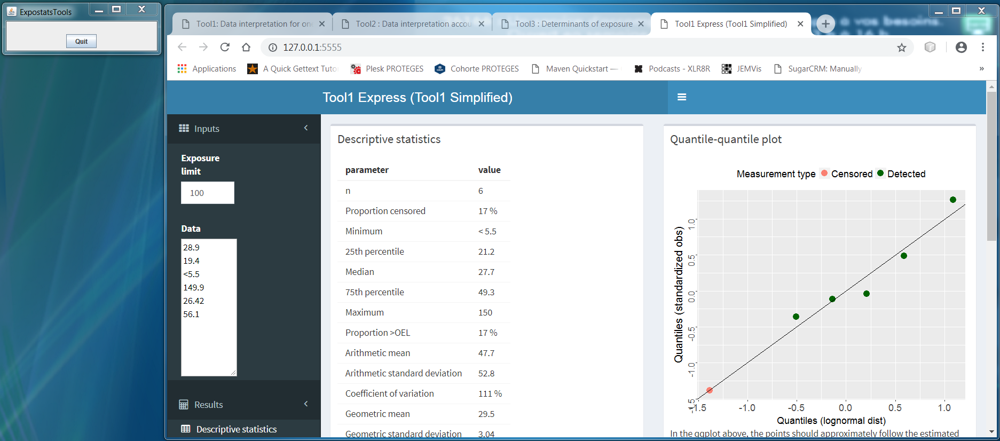

Statistical tools for the interpretation of industrial hygiene data

ExpostatsTools - Offline Multi-Tool - Instructions
Installation
- Download the archive (~320 Mb)
- Begin the extraction process by double-clicking on the file
-
You will initially see the following panel:
 The message is produced by a third-party software we use and can safely be ignored.
The message is produced by a third-party software we use and can safely be ignored.
Click "OK" to continue. -
Next you must specify where to copy to contents of the archive:
 Click "Next" to continue. -
At the third panel you have the option of creating a Desktop shortcut to your Multi-Tool.
It is recommended that you select "Yes".  Click «Next» to start unpacking the archive. -
During unpacking you will see a panel that looks like this:

Execution
-
To launch the Multi-Tool, double-click the shortcut that was placed on your Windows Desktop during installation.
Alternatively, you may open Windows Expolorer and find the folder in which you copied the archive's contents: Then double-click on the executable "ExpostatsTools.bat"
Then double-click on the executable "ExpostatsTools.bat"
-
Four tabs (one for each tool) will open in your browser:

The tools run on your local machine but offer the same functionality as the tools on expostats.ca.
A separate window will also open featuring a button labelled "Quit". - Once your session is completed, click "Quit" to shut down the Multi-Tool.
Last updated: